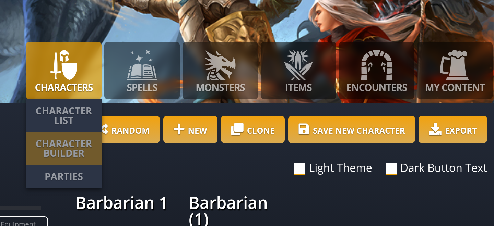
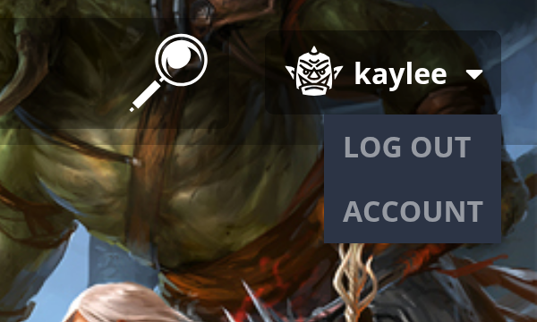
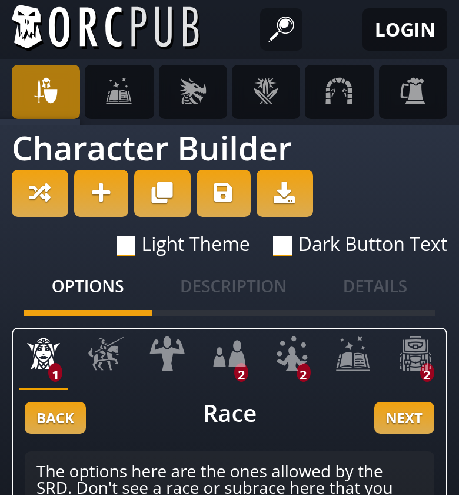
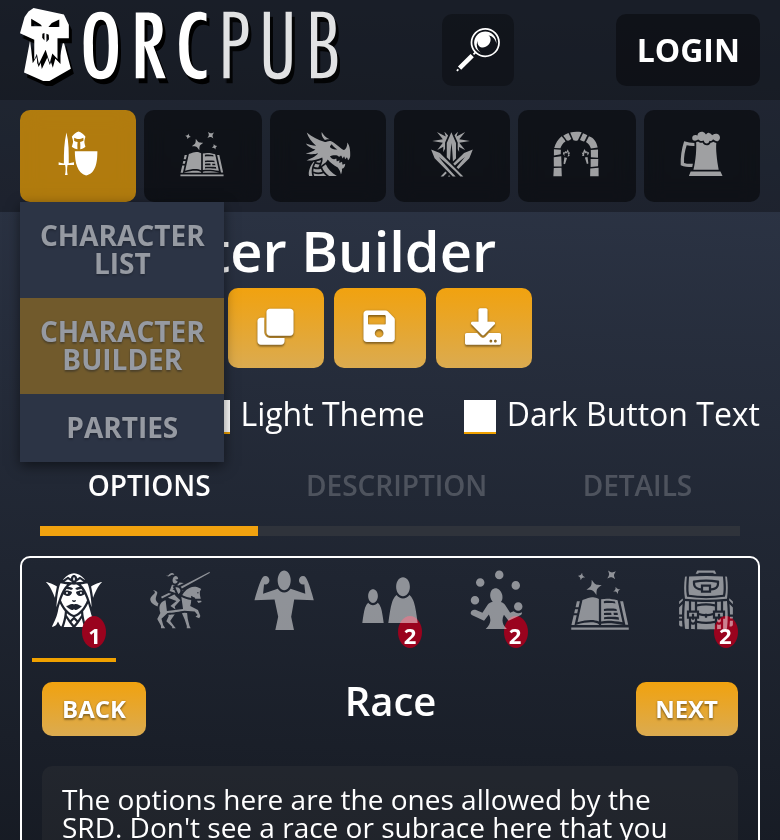
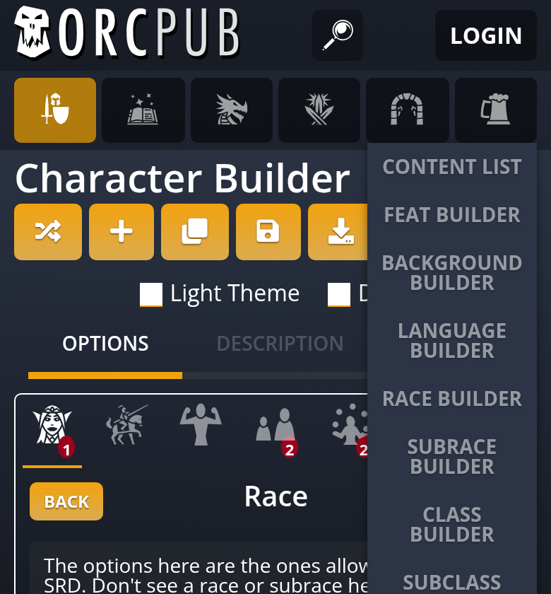
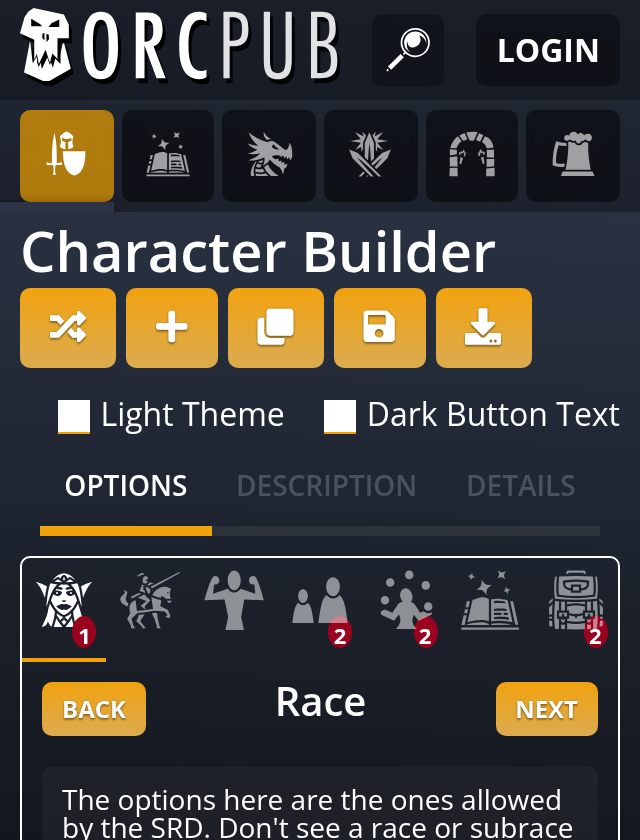
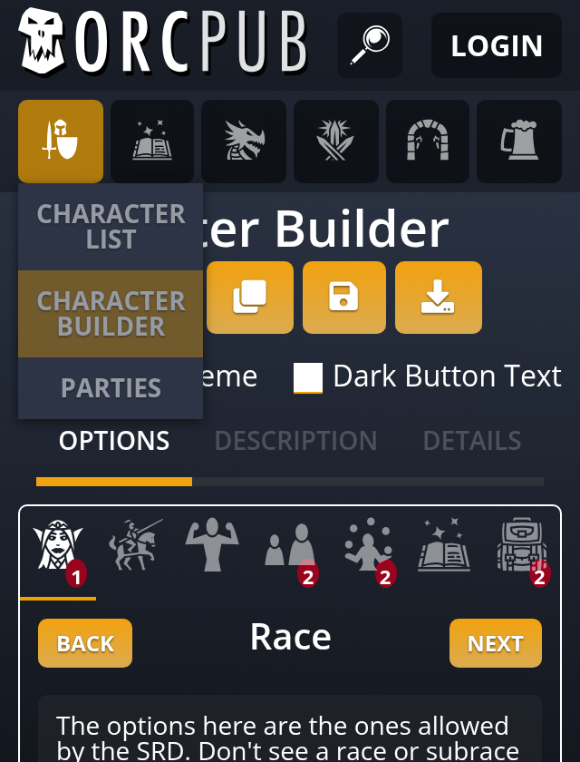

Header menus in Garden
The header has no inline style maps left. The move changed nothing on screen. Checking the phone menus for it turned up a real bug, which is fixed in a separate commit.
1. Active tab, flyouts and user menu move to Garden
;; views.cljs: five style maps
(def active-style {:background-color "rgba(240, 161, 0, 0.7)"})
(def menu-color "#2c3445")
(def header-menu-item-style
{:position :absolute :background-color "#2c3445"
:z-index 10000 :top 84 :right 0})
(def mobile-header-menu-item-style
(assoc header-menu-item-style :top 46))
(def user-menu-style {... :display :none})
;; and inline on the elements
{:style (when active active-style) ...}
[:div.header-flyout {:style (if mobile? mobile-... header-...)}]
[:div {:style (when current-page? active-style)} name]
[:div#user-menu {:style user-menu-style}]
(set! (.-display style) "block") ; opening the user menu;; views.cljs: classes only
{:class (str ... (when active " active"))}
[:div.header-flyout ...]
[:div {:class (when current-page? "active")} name]
[:div#user-menu.user-menu ...]
(.add (.-classList user-menu) "open")
;; core.clj
[:.header-flyout :.user-menu
{:position :absolute :right 0 :z-index 10000
:background-color "#2c3445"}]
[:.header-flyout {:top "84px"}]
[:.phone-tabs [:.header-flyout {:top "46px"}]]
[:.user-menu {:display :none}
[:&.open {:display :block}]]
[:.header-tab.active :.header-flyout>.active
{:background-color "rgba(240, 161, 0, 0.7)"}]The move, on screen
Before and after are byte-identical for the desktop menu, the user menu and the closed header at 320, 390 and 1280px, and the menus' computed position, colour and stacking match.
Characters menu, desktop identical


User menu, logged in, desktop identical


2. The phone menus open on screen
;; core.clj, phone header
[:.app-header
{...
:overflow-x :hidden}] ; also clips vertically
;; every flyout right-aligned to its tab;; core.clj, phone header
[:.app-header
{...
:overflow-x :clip}] ; sideways only
[:.phone-tabs
[:.header-flyout {:top "46px"}]
[".header-tab:nth-child(-n+3) .header-flyout"
{:left 0 :right :auto}]]The fix, on screen
Before, a tapped tab showed nothing: all 12 tab menus across a 390px and a 320px phone were clipped below the tab row, and the first tab's menu also started 34px off the left edge. After, all 12 open fully on screen. Nothing scrolls sideways, and desktop is unchanged.
Characters menu, 390px phone


My Content menu, 390px phone

Characters menu, 320px phone


Same bug on f1852203-accounts
The clipping rule came from 0a089349 on f1852203-accounts, so that branch has the same broken phone menus. It isn't changed here.